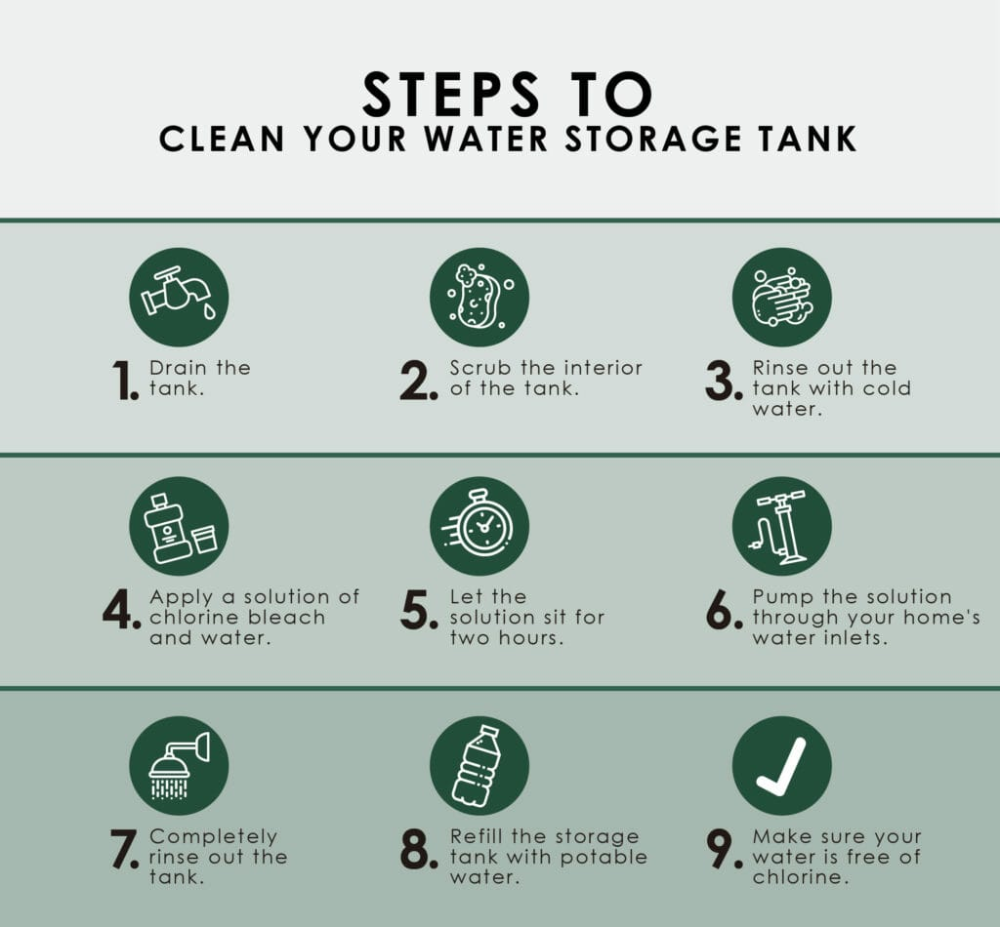
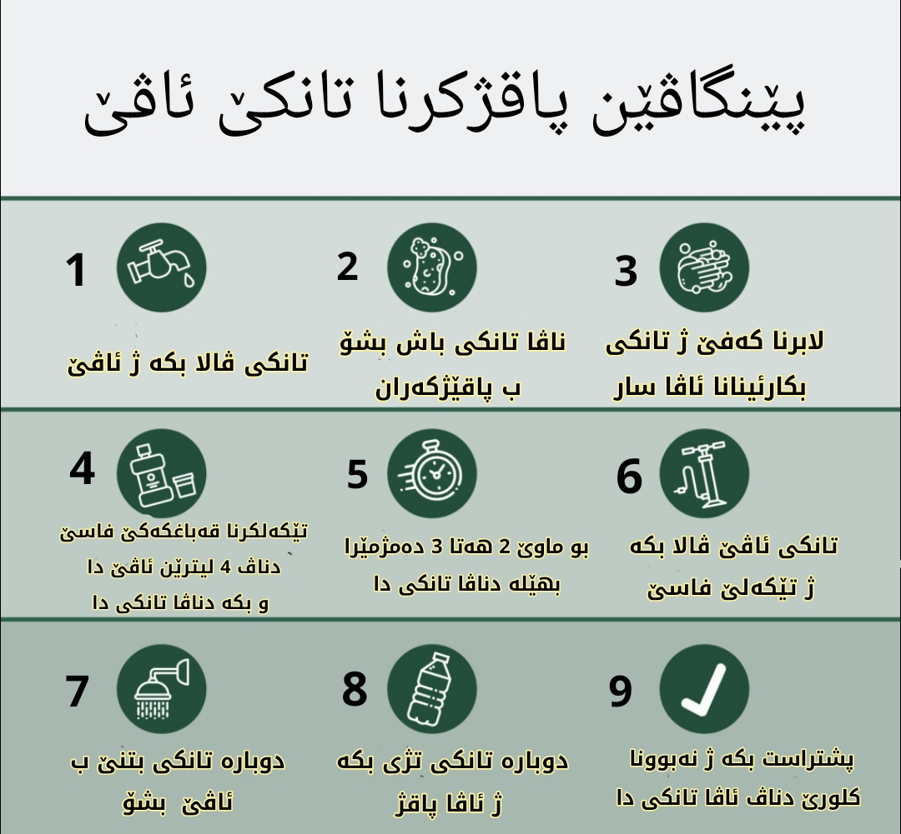
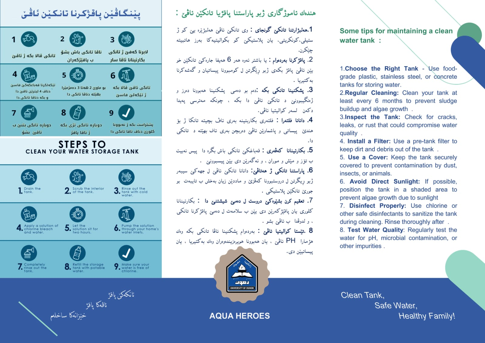
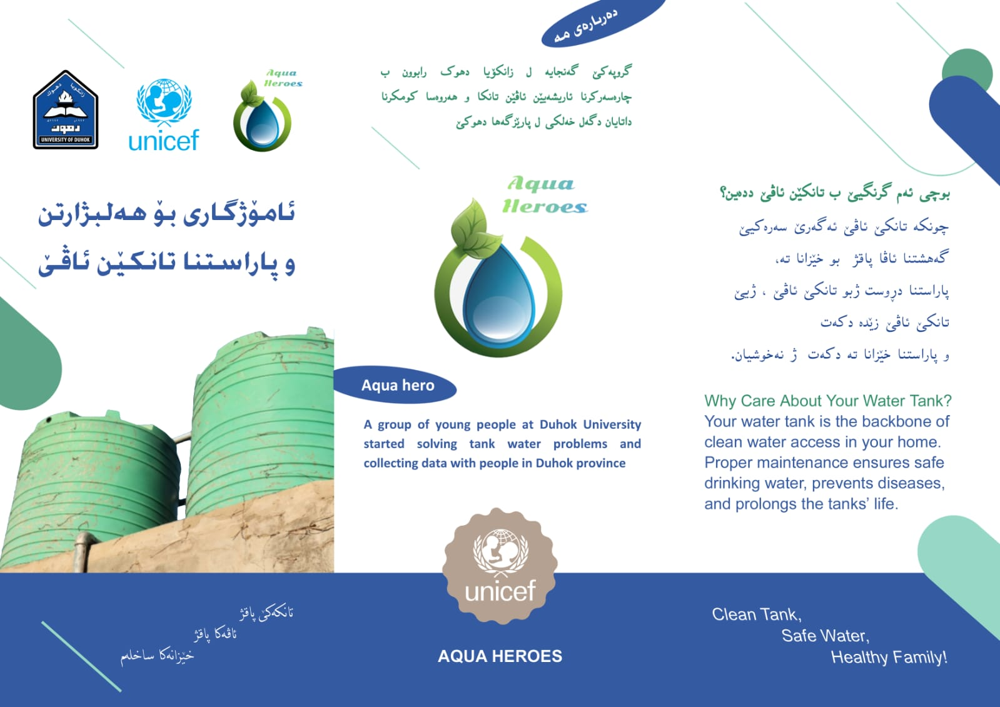
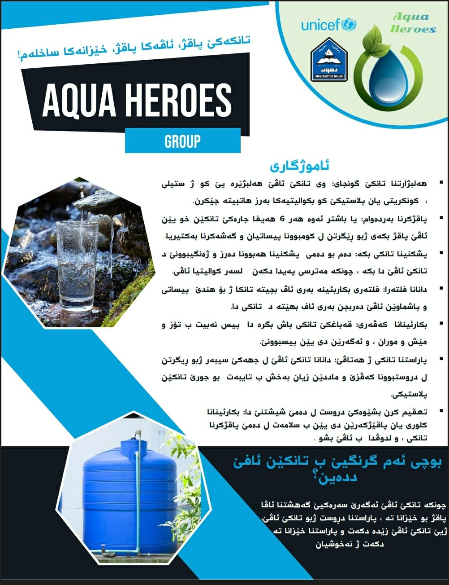
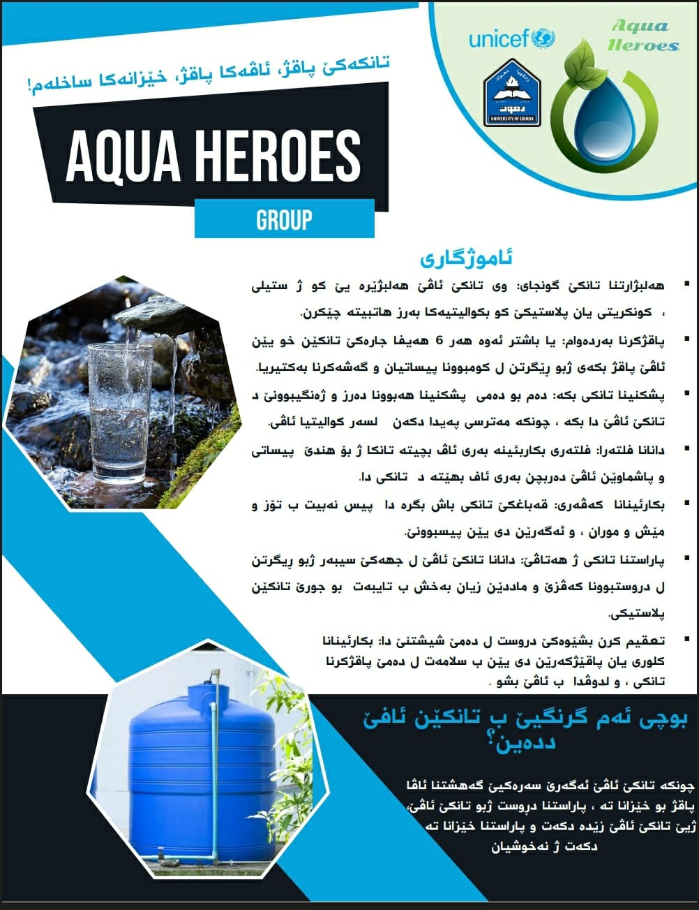
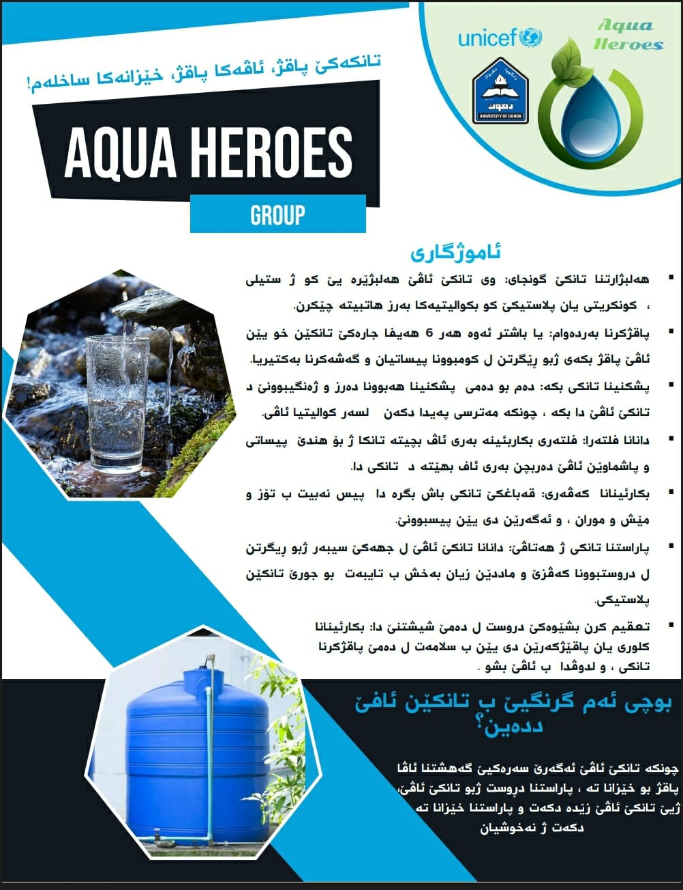

Aqua Heroes
Overview
The Aqua Heroes, a passionate team of four students from the University of Duhok, in collaboration with UNICEF,
conducted a Participatory Action Research (PAR) project to investigate how household water storage tanks affect
water quality and public health in Duhok City.
Our goal was to uncover the root causes of water contamination, understand community practices, and recommend
practical, science-based solutions to reduce the health risks caused by improper water storage.
What We Did
- Comprehensive field study covering 222 households
- 15 interviews with heads of families
- 6 Focus Group Discussions (FGDs) in public places
- 121 online questionnaires targeting youth, families, university staff, and workers
- Site visits to water supply stations and tank factories
- Water quality testing (pH & TDS) in selected households
Key Findings
- 64 households had never cleaned their water tanks
- Over 75% of tanks were uncovered or exposed to sunlight
- 167 families reported water issues like turbidity, odor, bad taste, or algae
- 47 families experienced water-related health problems:
- Stomach disorders
- Hair loss
- Skin allergies
- Kidney problems
- pH levels ranged from 6.0 to 7.3 (avg: 6.53)
- TDS ranged from 139 mg/L to 220 mg/L (avg: 175 mg/L)
- Only 24% of households had tested their water
- 91% showed interest in learning how to treat/protect water
Team Recommendations
- Government Regulation & Monitoring: Enforce standards, inspect factories, and introduce quality control
- Public Education: Campaigns on safe storage and cleaning practices
- Home Testing: Distribute low-cost test kits
- Infrastructure: Improve sewers and promote water meters
- Collaboration: Join efforts between health, municipal, and university sectors
Conclusion
While Duhok’s municipal water is generally clean, contamination often occurs inside homes due to unclean,
uncovered, or poor-quality storage tanks. These conditions are already affecting health.
However, the strong willingness of the community to learn and adopt safer practices offers real hope. By
combining education, regulation, and innovation, Duhok can lead the way in ensuring safe, clean water for every
household.
Team Members
• Asmaa Kareem Mustafa (Team Leader)
• Janan Sabah Ahmed
• Heleen Issa Fatah
• Eman Ibrahem Hassan
Supervisor: Dr. Shawkat Ahmed Kochary
An Inspiring Message from Our Team Leader
We weren’t just data collectors we were change makers.
Aqua Heroes went beyond research. We launched a citywide awareness campaign educating families, visiting
factories, and meeting with decision-makers. We taught people how and when to clean their water tanks. The
result? Real change. Families cleaned and even replaced their tanks.
We didn’t stop there. We uncovered unsafe manufacturing practices and took our findings to the authorities.
Media backed us. Action followed.
We’re not just students we’re young leaders proving that real change can start with something as simple as a
water tank.
– Asmaa Kareem, Team Leader | Aqua Heroes


Aqua Heroes Awareness Brochure




 


📄 Full Report Download